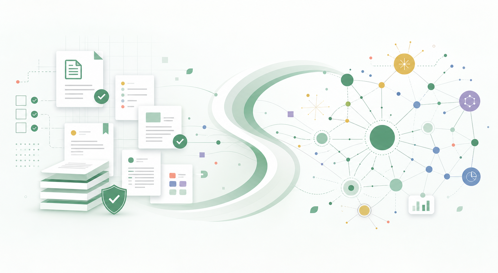
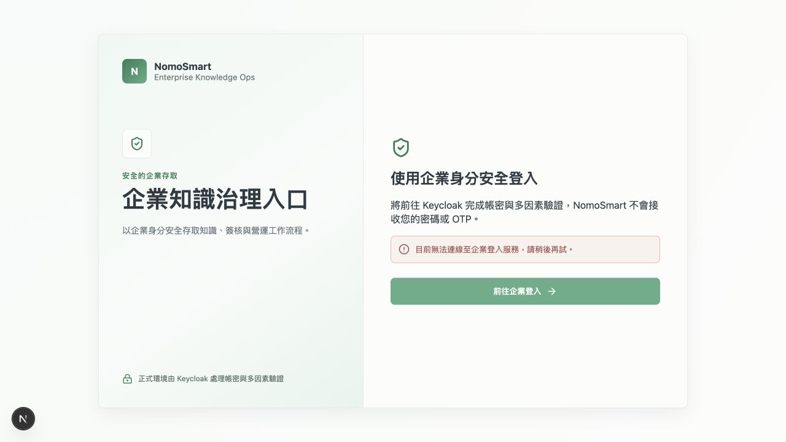

資料散落各處
文件、資料服務與跨部門內容各自存在，搜尋與重複利用成本高。
Governance × AI
NomoSmart 結合企業知識治理與 AI 能力，將散落於文件、資料服務與系統中的資訊，轉化為可信、可追溯、可持續運用的企業知識。

Nomos，讓知識有秩序；Smart，讓知識產生智慧。
Why NomoSmart
真正的挑戰不只是找到文件，而是確認內容是否正確、目前是否有效，以及能不能放心使用。
文件、資料服務與跨部門內容各自存在，搜尋與重複利用成本高。
缺少權限、版本、審核與來源依據，知識是否可用往往仰賴個人判斷。
回答看似快速，卻難以確認引用來源、適用範圍與內容正確性。
Knowledge Lifecycle
NomoSmart 串起知識的完整生命週期，讓每一步都有狀態、依據與可追溯結果。
文件、S3／FTP、HTTP API、跨專案引用
OCR、切片、標籤、Embedding、語意關聯
人工修正、版本管理、主管與 Owner 審核
正式發布、搜尋索引、知識圖譜同步
搜尋、RAG 對話、來源驗證、統計報表
Core Capabilities
不只儲存文件，而是讓知識從建立、治理到應用，都在同一個可管理的工作流程中完成。
將不同格式與來源的企業內容帶進專案，建立一致的知識入口。
透過 AI 處理流程，將原始內容轉化為可搜尋、可連結的知識單元。
透過權限、版本與雙層審核，把「可以參考」轉化為「可以信任」。
讓同仁用熟悉的搜尋、圖譜與問答方式探索知識，並核對回答依據。
Inside NomoSmart
清楚的專案脈絡、處理進度與知識內容，讓每位參與者知道目前在哪一步、接下來要做什麼。
整合跨部門作業規範與標準流程。
產品文件、API 說明與維運知識。
常見問題、處理案例與回覆依據。
新人手冊、培訓教材與制度說明。
Your Role
NomoSmart 將不同職責放進同一條知識流程，讓內容不再停留在少數人的資料夾裡。
匯入並整理部門文件與資料來源。
確認萃取結果、標籤與內容品質。
搜尋、提問並查看回答引用來源。
治理權限、核准發布並掌握成效。
實際操作範圍依個人權限與專案角色開放。

實際介面Enterprise Ready
而是讓身分、權限、內容與每一次決策，都有清楚的治理依據。